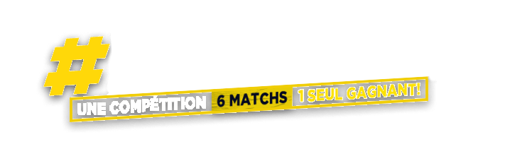

MATCH1Vote clôturé
Le vote pour ce match n'est pas (ou plus) ouvert. Revenez bientôt !
QR code invalide
Ce code de vote n'est pas reconnu. Merci d'utiliser le QR code qui vous a été remis.
QR code requis
Pour voter, merci de scanner le QR code personnel qui vous a été remis.
Merci pour votre vote !
Votre voix a bien été enregistrée pour ce match.